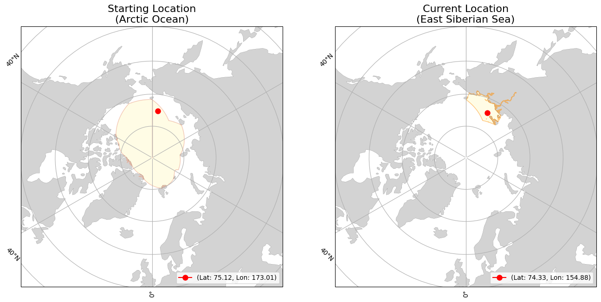
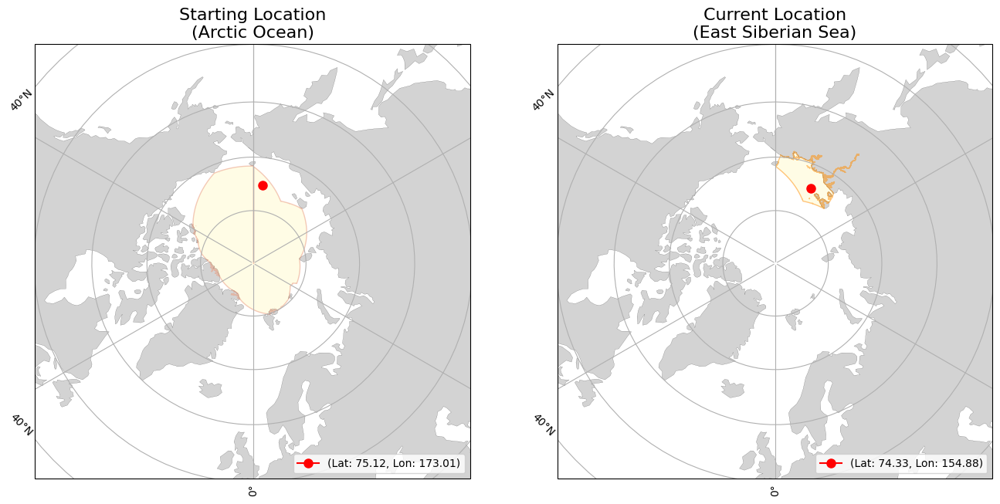

lon=173.01434
(Arctic Ocean)
lon=154.88403
(East Siberian Sea)
|
|
Buoy | Movement | Temperature | |||
|---|---|---|---|---|---|---|
| ID | 300534065160760 | Initial Position | lat=75.11925 lon=173.01434 (Arctic Ocean) |
Average Air Temperature | avg_air_temp | |
| Type | Ice Ball 112 | Current Position | lat=74.3292 lon=154.88403 (East Siberian Sea) |
Minimum Air Temperature | min_air_temp | |
| Start Date | 08-08-2024 | Daily Distance Mean | 22.447 | Maximum Air Temperature | max_air_temp | |
| End Date | 12-22-2024 | Daily Distance Median | 22.722 | Average Sea Surface Temperature | avg_sst | |
| Status | floating | Daily Distance Standard Deviation | 11.809 | Minimum Sea Surface Temperature | min_sst | |
| Total Distance Start to End Dates | 1750.857 | Maximum Sea Surface Temperature | max_sst | |||
 
